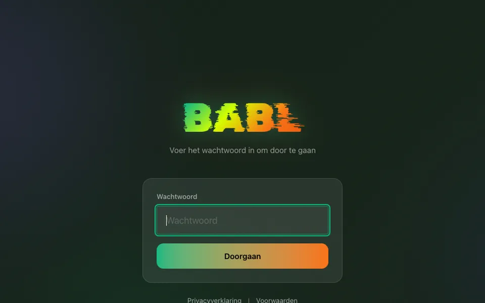
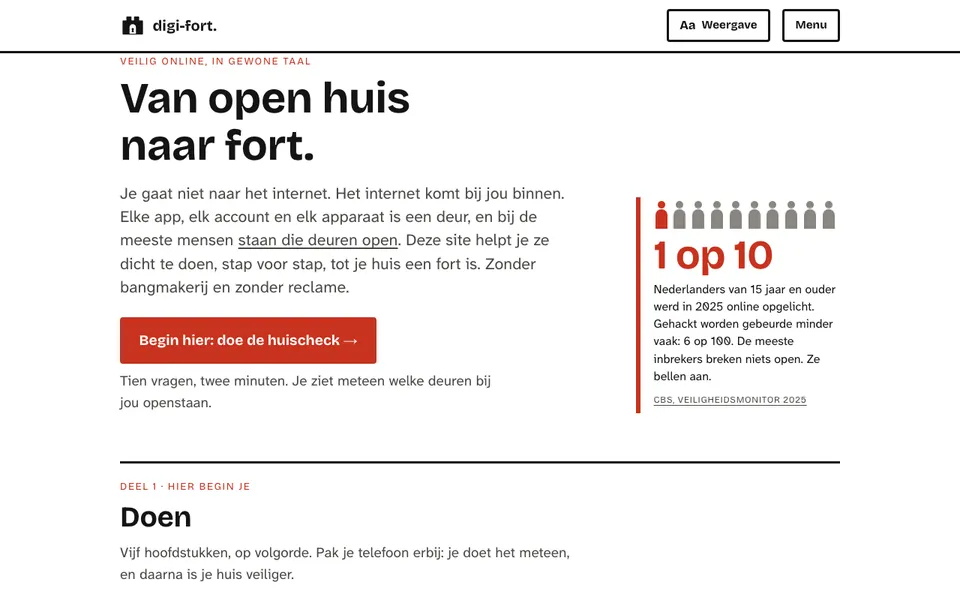
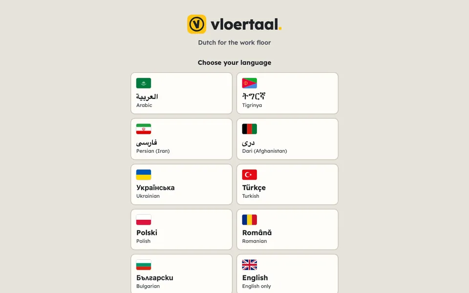
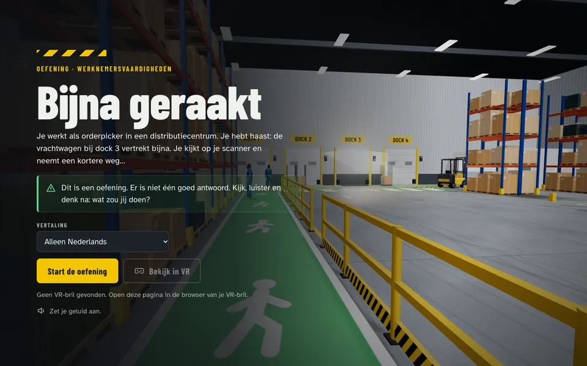
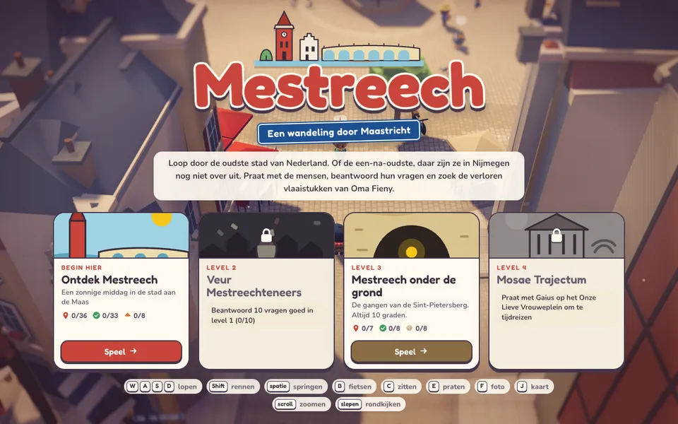
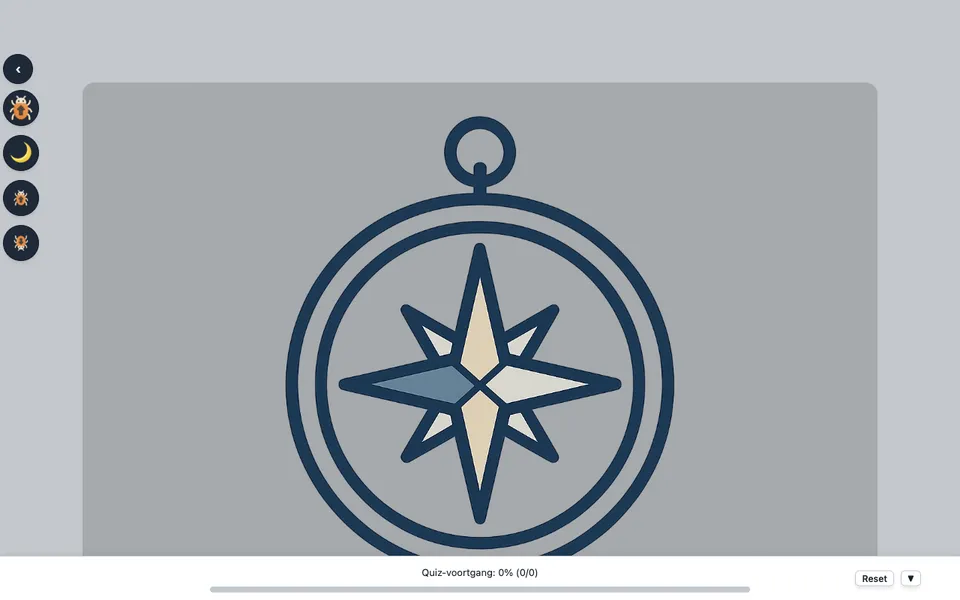
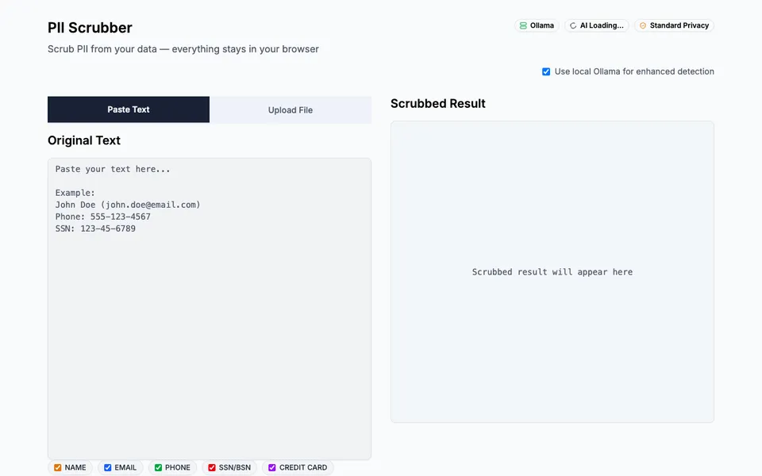

babl
Spreek Limburgs in en krijg Nederlandse tekst terug. Op uitnodiging.

digi-fort
Digitale veiligheid in gewone taal. Stap voor stap van open huis naar fort, zonder bangmakerij en zonder reclame.

vloertaal
Nederlands leren voor op de werkvloer, in de stijl van Duolingo. Via het Engels, met hulp in je eigen taal: Arabisch, Tigrinya, Oekraïens en meer.

simulatie
Bijna geraakt: een 3D-oefening in een distributiecentrum. Een heftruck rijdt je bijna aan en jij kiest hoe je reageert. Werkt ook met een VR-bril.

mestreech
Een 3D-wandeling door Maastricht. Praat met de mensen, beantwoord vragen en zoek de verloren vlaaistukken van Oma Fieny. Op uitnodiging.

ai-wegwijzer
AI-geletterdheid in gewone taal, met een quiz om te zien wat je al weet.

pii-scrubber
Haalt namen, adressen en andere persoonsgegevens uit een tekst. Alles blijft in je eigen browser. Nog niet online.